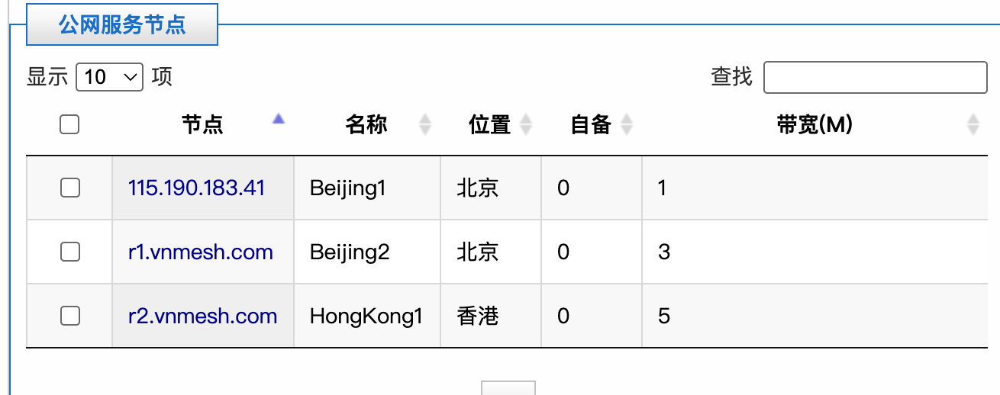

配置路径: "公网服务-公网节点"

这里会显示可用的公网节点
配置视图： config-view -> xnetc-view
使用示例:
xnetc-view>show pnt ip:115.190.183.41, port:1.2.1, name:Beijing1, pos:Beijing, bandwidth:1, domain:, self:0 ip:39.103.49.122, port:1.2.1, name:Beijing2, pos:Beijing, bandwidth:3, domain:r1.vnmesh.com, self:0 ip:6.6.6.6, port:1.2.1, name:SelfServer, pos:Beijing, bandwidth:10, domain:r1.myself.com, self:1
命令说明:
| show pnt | 显示公网节点 ip: 公网节点的IP port: 公网节点的服务端口 name: 公网节点的名称 pos: 公网节点的地理位置 bandwidth: 公网节点的带宽 domain: 公网节点的域名 self: 是否自建服务器。 0: 共享服务器; 1: 自建服务器 |